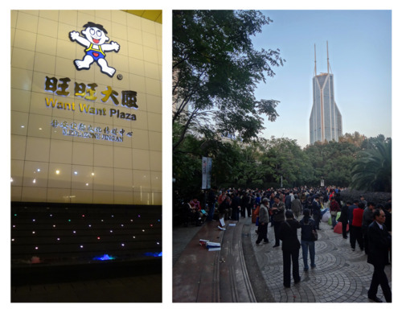

I tried to be less skeptical and giving the benefit of the doubt when it comes to anything related to advertising, specifically the big ad agencies. I failed.
My biggest disappointment, and this is going to sound horrible and I probably (most definitely) offend a lot of people, was the fact that the school session was heavily focus on advertising industry. And at the risk of sounding arrogant, I have very little respect on anyone coming from the big ad agencies. They’re all idiots until proven otherwise.
Now, I’m not saying they aren’t smart judging by the buzz they were able to generate (sales results of their ad work is another issues, by the way). But let’s imagine for a second… all those smart minds if directed and focused properly to do more meaningful work other than selling yet another soda or burgers? Mind blowing.
One thing that I kept hearing was about lack of talent in China. This, I must respectfully disagree with all speakers from the ad agencies. There are plenty of them, great ones, if they only look at the right place. And the arrogance thinking that no Chinese locals are good enough to lead in director level for creative position is simply nonsense. I found this condescending.
The day would’ve been a total lost had it not been for the frogs. I might be a little biased but I genuinely thought that they know their craft and use it well to learn and understand China. frog framework in dissecting what it means to be ‘on the ground’ that is China was refreshingly inspiring. Free from jargons and big words the frogs went for the real. And theirs was the first session in which you actually get to talk to Chinese Creative Lead.
Are you listening here, ad agencies? If you need talents, you go for it. You train and mentor them. Get involve in the local education scenes. Not just play the dumb game and take the easy way out (by hiring foreigners and believing that they will do better job than locals).
But then again maybe those guys (ad agencies) were right about one thing. Maybe lack of talent in advertising industry is an issue. But could it be because the smart and the crazy ones won’t even bother to work for them? Just ask those brilliant young Chinese who presented their innovative creation @TED Shanghai. Need I say more?
–
*photos:
(left) 上海汪汪大厦 @Jing'an district Shanghai)
(right) Shanghai Marriage Market (weekends only)